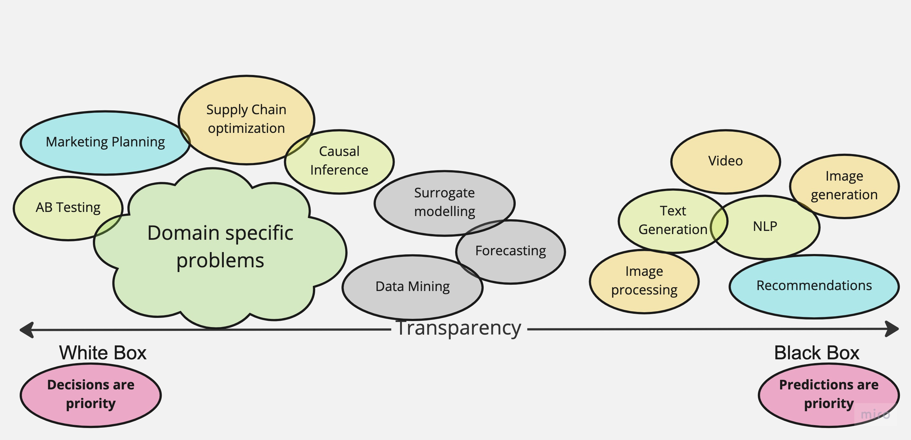

On Problem Landscape and Conformal Prediction vs. Bayes Dilemma#
There are a lot of ongoing debates between the Bayesian approach and doing conformal prediction. And I think this debate should not exist at all. Conformal prediction is a great approach, and it is more or less orthogonal to the Bayesian analysis. I’ll try to explain my vision about how conformal prediction relates to Bayesian analysis, what they share in common and why they are still very different.
Problems Landscape#
There are a lot of possible problem classifications. One of them puts a problem or domain task into either White Box, or Black Box set, there are also Grey Boxes. It turns around that this classification reveals conceptual differences and wide spectrum of problems people are dealing with.
Not every problem is a nail, and not every method is a hammer, sometimes you just need a screwdriver.
Black Boxes#
You might know a lot of black box tasks that are very-very common in real applications. Such include:
- Image/Video classification
Images or Videos are very complex objects that come from many observation sources. To describe that complex algorithms have to be proposed and implemented.
- Text/Sentiment analysis, generation
Text is more structured than images, it has grammar. It is structured as input, and the method objective is to translate it to machine or human-readable outputs
- Video segmentation
Sequences of images, videos, get an additional time structure. Neural networks create intrinsic abstractions to explain, transform it to outputs. Researches create algorithms in such a way that this structure is utilized.
These are the problems where the main focus is prediction. Nobody would ask, what does the intermediate representation of a neural network do. Such Black Box problems are very important to drive business optimization, solve consumer tasks. These problems are often very scientifically involved. It is very hard to make algorithms that solve those tasks transparent and interpretable.
Note
By “interpretable” I mean the ability to inspect not only the model outputs but all the intermediate steps that were taken by an algorithm to create a prediction.
Fair to say that a lot of research and education materials about how to move Black Box Models to a more Grey Zone. One of the best resources is “Interpretable Machine Learning Book” [1].
Yet even with all the available methods model introspection solves a part of being “interpretable”. For Random Forest that would be all the binary decisions and splits for each tree and an explanation on why the splits were taken in a particular order. Treat this as an interview with a person who created all these rules and explains them to you. So “interpretability” is not only about being explicit about the actual steps but also about the ability to explain what does a particular step mean in “human language”
Grey Area#
Somewhat in between fall all the problems where at least some structure has to be respected.
Under this category we can refer such problems like:
- Structural Prediction
The prediction has physical constraints
- Time Series analysis
Since we need to respect causality that future does not influence the past
- All the Causal models
What we need are the building blocks and respect relations. What are exact relations is a separate issue.
There are sure a lot more problems that can be also discussed under this category. What is in common for these problems is that not only the prediction starts to be important, but the structure. We might be not interested in the exact functional relations and whether we can interpret each connection. Treating a data problem like this is much more powerful and make you think about the causes of the output, confounder variables, etc. More on the Causal Inference you can find in the legendary “The book of Why” [2].
Causal framework, on the other hand is not often needed. Just a step back, where we were looking at the image classification or segmentation. There is little sense to introduce another layer of complexity to the problem if the sole purpose is to classify cats and dogs.
Thus, the biggest difference from Black Box models is the requirement on some sort of structure. The structure helps to either constrain set of algorithms together or make the model actionable for real applications.
Note
You can’t have an actionable model if it is not causal. Black Box models are conditional.
There is a special notation for Conditioning
vs Causality
\(\operatorname{do}\) is the intervention into the causal process.
White Box#
The White Box models are in 90% (I bet there are exceptions) cases causal by construction. In these types of models you think first about the causal graph. And after the causal graph is specified, you decide on how exactly graph entities are connected.
Moreover, the real benefit in such applications is not the prediction per se (sure it can be useful), but the internals of the modeled process, its byproduct. In such applications the byproduct is central, not the outcome.
Note
It might be controversial to put insights above the predictions. However, think of it, what drives your business, by how much? Build your mental model. You need insights, predictions are to validate you are not off with the conclusions.
On a Marketing example let’s see how it looks like to be White Box minded. Like every problem we need to build causal relations to figure out what has to be tight together, what not.
Then we move to implementing each part of the causal graph with rigor mathematical models. Since usually we have a lot of structure assumptions we have to be extremely explicit about every equation.
Concretely, given a time series target variable \(y_{t}\) (e.g. sales on conversions), media variables \(x_{m, t}\) (e.g. impressions, clicks or costs) and a set of control covariates \(z_{c, t}\) (e.g. holidays, special events) we can consider a linear model of the form
where \(\alpha\) is the intercept, \(f\) is a media transformation function and \(\varepsilon_{t}\) is the error term which we assume is normally distributed. The function \(f\) encodes the contribution of media on the target variable. Typically, two types of transformation are considered: adstock (carry-over)
and saturation effects
The modelling involves more and more steps to take in account and that is the day-job of stats practitioners. The key difference from Grey Area approach is that just causal graph is not enough and fitting a model per relation would not represent the actual process accurately and what is more important, reliably.
Media Mix Models is just the most known example of White Box models. Many other problems that should be treated as White Box include such domains as
- Chemistry
All the mixture evolution equations, reaction times, diffusions they all benefit from writing a simple parametric function that comes from theory. Black Box models can be very off from theoretical assumptions and constraints.
- Biology, Neurosciences
In such domains soft knowledge prevails and is not formalized. If there is data, a model, one of the requirements for the model would b to follow all these soft constraints. With weakly interpretable models it is hard to control if the model violates any of them. Simple equations can be the essence of the discussion, brainstorm, they can be challenged against any assumption.
- Other
It is hard to enumerate all the spheres and applications where this is useful. Often, the problem is that niche, that it is only known to narrow PhD students or mature professionals. For these people they have a mental model in their heads and mostly do analysis on paper or Excel tables. However, if we are about to extract soft knowledge into a rigor model could be done with primarily White Box models. Simple should stay Simple.
Note
This is where the Bayesian approach really shines. In this rigor setting with a lot of domain knowledge and structure it is possible to quantify any soft assumption.
Conformal vs Bayes#
Time to discuss the conformal prediction [4][5]. Now we know what are Black Box models, White Box Models and the whole spectrum that includes the Grey Area of structured Models. The classification helps very much to decide on what approach to take to solve a concrete problem.
Note
- Conformal prediction
is a method to quantify uncertainty of an arbitrary model prediction. You can treat it as an additional output that estimates standard deviation of the prediction.
- Bayesian uncertainty
is a measure of unknown about the model and the parameter space and encoded in a prior distribution. Bayesian inference uses data and likelihood distribution to reduce the amount of uncertainty. The combined expert and data knowledge is the posterior distribution.
- So why conformal prediction is opposed to Bayesian approach?
Well, both deal with uncertainty.
- What should one use to calculate uncertainty?
Right, probabilities.
- Is Bayesian approach the only to calculate uncertainty?
No! Conformal prediction does the thing too!
- What uncertainty are we talking about?
Good question!
So indeed, there is the common application for these theoretical methods is to calculate uncertainty. The thing that is often missed in these debates is what uncertainty is assumed.
Aleatoric and Epistemic Uncertainty in Machine Learning: An Introduction to Concepts and Methods [6]#
- Prediction Uncertainty
The uncertainty that is solely contained in the predictions of the model
- Epistemic
Refers to the uncertainty of the model that is due to lack of data.
- Aleatoric
Refers to known uncertainty of data, some randomness.
- Prior Probability
The uncertainty over the model itself, not the prediction, not the input. This is also referred as “putting expertise into the model” or “taking in account assumptions” In a nutshell, it is the mental model I was talking about in White Box, but in a rigor framing, reasonable skepticism and assumptions. You can often find this term mentioned in Bayesian analysis.
- Posterior Probability
Once we get data and put it into our mental model, the outcome is more complete understanding of the model, the process. It is the refined picture like how we change our mind after getting into an investigation. Every piece of data contributes and challenges priors to for the posterior. The uncertainty that is reduced is about the mental model itself.
Bayesian vs Conformal#
Prediction uncertainty can be calculated in a Bayesian analysis and using conformal prediction methods. Mental model uncertainty is only present for the Bayesian alternative. What is more useful and when? That is where the discussion about the Problem Landscape becomes useful.
Note
Motivating the importance of uncertainty is not the idea. Sometimes it is not super useful. But when it is, you probably understand why already.
Black Box |
Grey Box |
White Box |
|
Conformal Prediction |
Predictions |
Predictions |
Predictions |
Bayesian |
Model and Predictions |
The table above is an essence of the debate. It is obvious now, that the focus of the conformal prediction is prediction, it does not help much to reduce the uncertainty around the mental model. On the other hand, Bayesian methods do not help to deal with uncertainty of any kind in Black Box models or even Grey Box Models.
Conclusions#
There is little place for debate, Bayesian methods focus on White Box applications and help to quantify the uncertainty for the model and insights. If you are passionate about predictions only, and need to quantify uncertainty as a bonus, conformal prediction is the way to go.